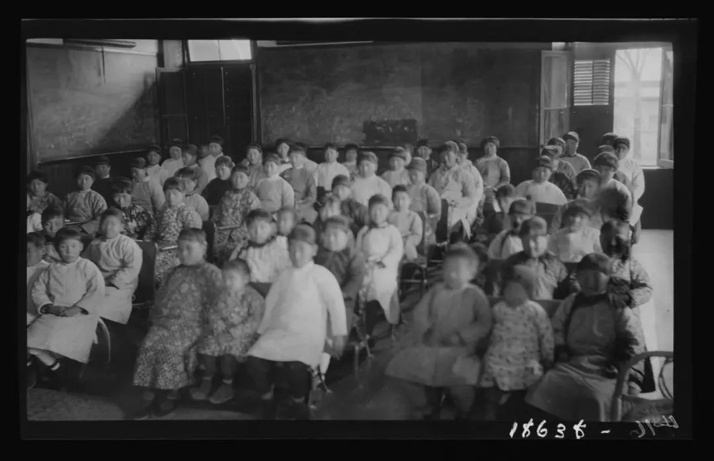
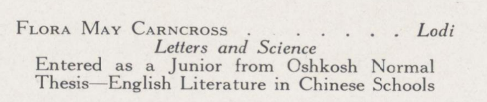
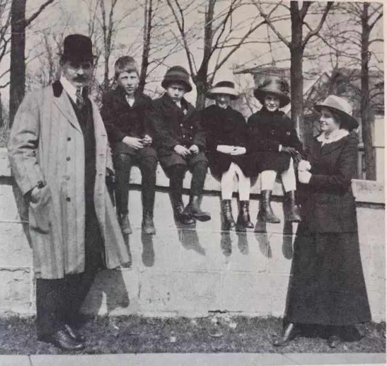
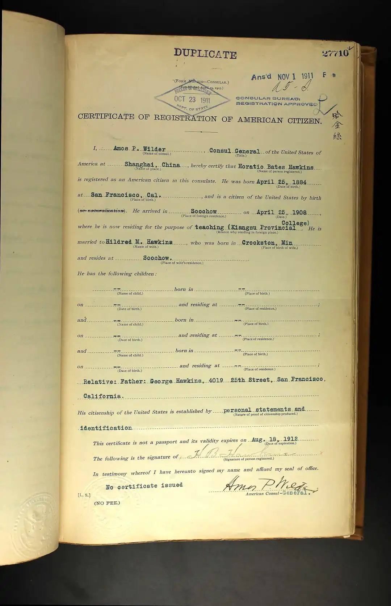
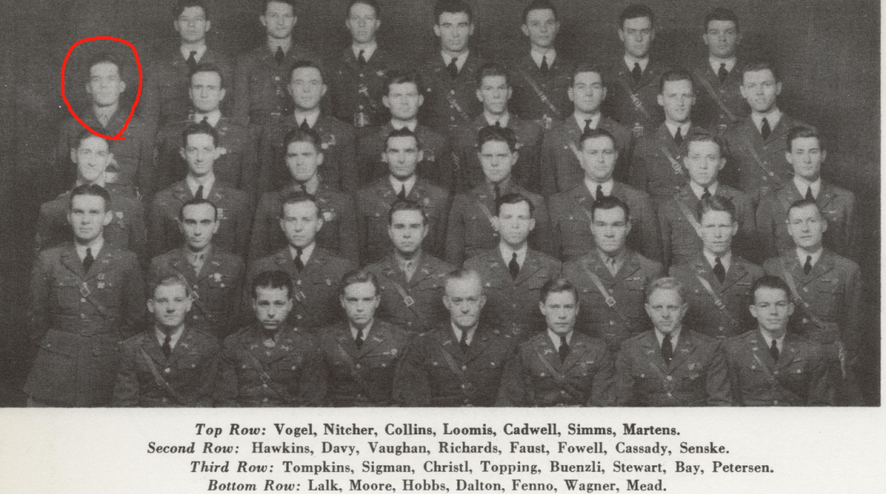

前两期文章我们讲述了威斯康星大学华裔杰出校友的故事，今天我们将换一个视角，讲一讲美国籍的威大校友在中国的故事。这也是我们这个公共史学项目的一部分：我们既要将威大华裔校友的事迹公之于众，也要记录那些在威斯康星思想（Wisconsin Idea）的感召下，不远万里来到中国的美国人。他们中的不少人为中美文化教育交流做出了突出贡献，并影响至今，他们也值得我们铭记。同时，他们在中国的经历也为研究中国近代史提供了珍贵的一手资料。
在此，我也希望读到本文的中国同学能够把这些校友的故事介绍给你身边的美国同学，鼓励他们去了解当代之中国，进而成为这些校友的后继者。
1920年代的威斯康星中国计划：致力于让大学服务社会的威斯康星思想在中国生根发芽
中国女子教育的先驱
Flora May Carncross
（康凤楼）
Flora May Carncross
1878年3月21日，Carncross女士出生在艾奥瓦州的一个小城Glidden，后来随父母迁居到威斯康星Lodi生活。她从很年轻的时候就热心于教育，先后在威斯康星州的Hayes和Wausau给当地的孩子教了九年的书。
1904年，Carncross女士毕业于威斯康星的奥什科什州立师范学校（今天的威斯康星大学奥什科什分校），作为一名虔诚的基督徒，她在毕业后萌生了当传教士的愿望。于是她前往芝加哥的传教士培训学校接受训练（接受中文培训）。1908年11月17日，她以美以美会传教士的身份被派往中国，登上了从旧金山前往上海的轮船，前往遥远而神秘的东方古国。
康凤楼女士的护照
Carncross女士首先在南昌的葆灵女子书院（Baldwin School for Girls，今天的南昌十中）教书，并有了自己的中文名字康凤楼（接下来我们就叫她康女士）。因为工作出色，康女士后来被派往镇江女子学堂担任校长，在此期间她在幼女的启蒙教育上花了大量的心血，自己创作教材并将大量美国教材翻译成中文供女生们使用。在这个历史时期，女孩接受公共教育，尤其是接受新学堂的教育对中国人来说是十分不寻常的一件事。女老师和女学生备受当时社会上不少保守人士的偏见和误解。同时，中国普通民众对帝国主义侵略中国的愤怒，常常也会宣泄到这些传教士和洋教师的身上，康女士的处境可想而知。
早年的镇江女子学堂
康女士主持学堂期间的课堂，可见女学生的年龄差异非常大
1910年6月，在南洋劝业会（中国最早的全国性博览会）开始之时，有传言称一些极端排外分子要趁机发动针对长江沿岸外国人的暴动（这次风波的来龙去脉有待考察），各国的领事都开始向侨民发出警告，并派炮艇进入江面严阵以待。在此紧要关头，康女士立即关闭了学校，并把自己的学生都送回了家，自己留下来护校。幸好所谓的暴动只是虚惊一场，女孩子们高兴地跟着康女士参观了这次盛大的博览会。有趣的是，当时在绍兴府中学堂担任教师的鲁迅先生也带着他的两百名学生来参观博览会。真不知道这两队大开眼界的学生遇上了没有。
南洋劝业会在南京举行的盛况
1914年，康女士获得了第一个休假机会，她感到自己需要更多的理论知识来完善教育工作，因此，她来到麦迪逊的威斯康星大学攻读教育学，并于1916年获得教育学学士学位。她的毕业论文颇具问题导向《中国学校中的英语文学教学》。之后，她马不停蹄地赶回镇江继续履行职责直到1917年调离 。

1917年鉴上的康女士毕业照
当康女士回到学校时，她在课堂里遇到了一个年轻的女教师正在教中国孩子读查尔斯狄更斯的小说，这位美国女子自小在镇江长大，也在镇江女子学堂里开蒙，她就是赫赫有名的女作家，诺贝尔文学奖得主赛珍珠。在康女士担任校长期间，学校订立了“崇俭务实”的校训，并有了一个更加响亮的名称“崇实女中”。
赛珍珠
1917年10月，康女士调任南京的汇文女子中学校长直到1922年她获得第二次休假机会，回到中国后她执教于著名的金陵女子大学英语系，并当选为中国美以美会妇女理事会的主席。
然而，正当康女士踌躇满志，要继续她在中国的教育事业时，病魔无情地夺走了她的生命。1925年4月2日，她在北京死于一场乳腺癌手术，葬于北京。多年后，她的灵柩被迁回自己的第二故乡，威斯康星的Lodi镇埋葬。
康女士在金陵女大的事迹刊登在威大1925年的年鉴上
康女士的墓碑
由于英年早逝，康女士没有曾在正史上留下很多的笔墨，几乎被人遗忘。今天我们只能从学校年鉴、英文报纸和教会的会议纪要中回顾她的作为。然而康女士是那个时代怀揣着信仰和对中国人民真切情感，不远万里来到中国的教育工作者的代表，作为中国近现代女性知识分子的启蒙者，她的功绩已经不言而喻了。在她去世后，美以美会给她如下的评价：
“作为一名教师，她是有耐心的，不知疲倦的，高效的。她最大的贡献就是她带给了这些女学生宝贵的精神。在每个岗位上，她都用最高的人生理想去激励她的学生。正如她的名字，她对美的事物充满热爱，几乎总是佩戴着鲜花。我们的使命和事业因为有了她十六年的无私奉献而更加充实丰满。现在，想到Flora已经和她爱的主在一起，我们就会感到宽慰。”
从威大毕业后前往中国教书的绝不止康女士一人，图中的1916级硕士生Kelly女士也曾在著名的贝满女中执教
三代威大毕业生的中国情缘
1919年，中国爆发了五四运动，举世震惊，中国近代史就此展开了新篇章。5月4日那天，学生们游行到东交民巷使馆区，并向美国公使提送了陈情书，督促美国在巴黎和会上主持正义，帮助中国收回青岛及山东一切权益。当时的美国驻华公使就是来自威斯康星的芮恩施（Paul Samuel Reinsch）。作为五四运动的亲历者，他后来著有《一个美国外交官使华记》，是研究中美早期外交史的重要材料。
1901年威大年鉴上的芮恩施
芮恩施（Paul Samuel Reinsch）是美国著名的政治学者和远东外交事务的权威。他出生在威斯康星的密尔沃基市，1892年他在威大获得了学士学位，1894年考取律师执照，1895年他成为史学大师特纳的博士生，1898他获得政治学博士学位并于次年升任副教授。芮恩施在威大的二十五年经历了学校的重大转型升级，一时间麦迪逊内群星闪耀。经济学家理查德·伊利创办了经济系、政治系和历史系；威斯康星州长拉福莱特推行着大刀阔斧的进步改革；威大校长范·海思和经济学家康芒斯（上期提到的陈岱孙的贵人）构想着威斯康星思想的宏伟蓝图；历史学家特纳创立了新史学和“边疆学派”；芮恩施创立了学校的第一堂国际政治课程...... 在这些优秀人物的推动下，19世纪末20世纪初的威大呈现出一派万物竞发的景象，一时风光无二。
十九世纪晚期的校园
教授一家在校园
1913年，芮恩施得到了驻华公使的任命，前往北京。此时的中国，民国初建，百废待兴，本来无数仁人志士为之流血牺牲宪政梦想在政治阴谋和军阀倾轧中划为泡影。芮恩施建见证了民初所有的重大事件，包括洪宪帝制、二十一条、护国战争、张勋复辟、新文化运动和五四运动。他和很多重要历史人物，包括袁世凯、孙中山、康有为、梁启超、顾维钧、梅兰芳都有密切的交往。
袁世凯接见各国公使，前排右一为芮恩施
在政治主张上，芮恩施继承了海约翰主义对中国的门户开放政策，主张对华友好，扶持中国的现代化（包括推进留学生计划），反对日本和俄国在中国的侵略。他支持袁世凯称帝（因为他认为袁世凯的权威能够让中国变成一个强大的君主立宪国家，从而有效遏制日本在东亚的扩张），同时也是1917年中国対德断交和宣战的主要推动者。根据威尔逊总统的授意，芮恩施向北洋政府承诺，中国参战以后，美国会帮助中国提供国际地位。这种表态一度使得当时中国的知识界对美国充满期待。然而，芮恩施没有想到，威尔逊没有履行他提出的十四条原则，在1919年5月的巴黎和会上允许日本继承德国在中国山东的利益。这种背叛使得中国人大失所望，并促使陈独秀和李大钊等一批新文化运动领袖将目光转向新生的苏俄，为中国共产党的诞生成立奠定了基础。
眼见中国风起云涌的爱国运动，芮恩施既感佩这些中国年轻人的责任感和救国热情，也对美国政府背信弃义感到愤怒，于是他于1919年9月辞去了公使之职，临走时他促成了梅兰芳的首次赴美公演。1922年，芮恩施重返中国，为中国政府提供法律和金融方面的咨询服务，期间病逝于上海。
芮恩施虽然中年猝逝，但是他的中国情怀得到了继承。1905年他在威大的一个学生Horatio B Hawkins（BA.1905, M.A1909 昵称Ray）在他的感召下同样对中国产生了浓厚的兴趣。本科毕业后，Ray于1906年前往上海，为著名的中国海关总税务司的负责人赫德爵士工作。在接下来的34年中Ray历任苏州、牛庄（营口）、宜昌、芜湖、福建三都澳、厦门、广东横琴岛和南宁的海关税务司专员，可谓是跑遍了大半个中国。直到1940年抗战期间，Ray和妻子从被日军包围轰炸的广西北海撤往印度，结束了在中国的工作。
Ray在1932年年鉴上的照片
上海美国领事馆发给老Hawkins的美国公民登记证明，仔细看，时间是1911年10月，辛亥革命正在如火如荼的进行
最有意思的是，Ray的太太是芮恩施太太的妹妹，因此Ray和芮恩施除了是师生，还是连襟。Ray的太太Daisy也是威大毕业生（B.A.1909），这位夫人绝对是一个厉害角色。据美国报纸的记载（待考证），1911年，当Hawkins小两口在苏州度蜜月时，正好赶上苏州革命党人发动起义，而Daisy在守城清朝官军和革命军的谈判中发挥了调解人的作用，让双方的领导人在自己家里边喝茶边谈判，使得苏州和平光复。1915年，Ray和Daisy的孩子Paul在北京出生，和中国孩子一起长大，成了个地地道道的小北京。
Daisy和儿子Paul在北京
1929年，正当一家人在芜湖团聚，准备要把Paul送回美国念中学之际，险情再一次发生了：在一个清晨，芜湖地区突然发生了军阀混战，而一家人住的房子正处在两派军阀交火的中间。仆人逃跑了，呼啸的子弹把玻璃打得粉碎，Daisy还是最先冷静下来的那个人，他阻止了大家逃出屋子的企图（出房子意味着更大的危险），并冷静地来到炉火边为家人准备早餐。一家人在桌子底下吃完了早饭，又打起了桥牌。在这恐怖的几个小时里，子弹时不时地击中家中的物品，可一家人依旧在发牌。直到上午九点多，才有人来把这一家人搭救上长江上的美国炮艇。
1920年代，Ray和吴佩孚监督销毁走私的鸦片，吴佩孚很赞赏Ray的才干，把他拉到身边合影。Ray称吴佩孚是“中国最伟大的将军”
Paul年纪轻轻就和勇敢的父母一起经历了战火的洗礼，他自然也变成了一个天不怕地不怕的男孩子。他后来回到美国以后就和自己的姨妈芮恩施太太住在麦迪逊，他于1932年毕业于威斯康星高中，1937年毕业于威斯康星大学。随后他做出了和父亲一样的决定——前往中国。他在上海的花旗银行分部工作，生活优越，期间又娶了漂亮的妻子（也是威大校友），然而他不知道的是，等待着他的是更大的考验。
高中毕业时的Paul,一看就是个小刺头
大学时参加预备役军官训练团的Paul，他担任营指挥官，这里得到的技能几年后会救他一命
1941年12月8日，Paul在靠近外滩的都城饭店被电话惊醒，朋友告诉他日本人偷袭了珍珠港，上海的日军已经开始了针对租界的敌对行动。Paul一下子就懵了，但是直觉告诉他，如果留在上海只会成为日本人的奴隶，唯一的出路就是逃离这座城市，前往中国的大后方参加抗日，为自己的国家效力。
都城饭店
于是，他火速打了一个出租车直奔位于上海西郊的美国哥伦比亚俱乐部，牵走了自己骑过的马，风驰电掣地逃离了上海。Paul选择的交通工具非常巧妙，汽车走大路肯定会被日军拦截，而骑马速度快，又可以走小路。这匹赛马帮助Paul成功突破了日本人的第一道封锁线。
美国哥伦比亚俱乐部
可是随着Paul进入上海外围纵横密布的河沟港岔，骑马就变得不那么方便了。于是他放弃了马匹开始步行。凭借自己在大学预备军官团时锻炼出来的优秀体能和生存本领，Paul连续游过了二十多条河流，在夜里偷偷潜过汪伪军队的岗哨，一旦军车从身边经过，他就跳进路边的泥坑里。有好几次他离日军只有几米远，可最后都凭借成功的伪装化险为夷。第三天，衣衫褴褛、身体达到极限的Paul夜宿到一座村庄的废弃屋子里，被好心的中国村民发现并保护了起来，Paul吃到了热腾腾的饭菜，换上了中国人的衣服。第四天，村民把Paul送到了附近的游击队营地。此时，Paul才发现自己已经跑出上海将近一百英里了。
游击队给Paul非常好的照顾，并通过短波电台和上级报告了有美国预备役军官从上海逃出来的消息。在出逃的第15天后，Paul加入了游击队的别动队，再次穿越日本人的封锁线到达浙江金华，最终经历了整整46天才到达了中国战时首都重庆。这则新闻瞬间成了整个威斯康星大小报纸的头条。
成为英雄的Paul
Paul加入国军的愿望因身体原因没有实现，于是他通过滇缅公路来到印度孟买，然后乘军舰辗转回到美国。可是真金不怕火炼，纵然经历了千辛万苦，Paul的战斗热情依旧不减。在Paul的再三请求下，他最终如愿加入了海军陆战队并参加了在南太平洋的反攻行动。
Paul成功地活了下来，并以战争英雄的身份在战后带着妻子和孩子重返上海定居。可是中国大陆风云突变，Paul于1949年以前也离开了美国。至此这三代人，跨越近四十年的中国缘才告一段落。到了六十年代Ray和Daisy不顾年事已高，重返麦迪逊，用自己的余生整理老师芮恩施留在威大手稿，并留下了很多讲述自己在中国经历的录音。今天这些珍贵的材料都静静地躺在Historical Society的档案室里，等待后辈学人去探寻这发生在东方的传奇往事。
(未完待续)

用户甲
December 18, 2017来自用户甲的评论，来自用户甲的评论，来自用户甲的评论，来自用户甲的评论，来自用户甲的评论，来自用户甲的评论，来自用户甲的评论，来自用户甲的评论，来自用户甲的评论，来自用户甲的评论，来自用户甲的评论，来自用户甲的评论，来自用户甲的评论，来自用户甲的评论，来自用户甲的评论，来自用户甲的评论，来自用户甲的评论。